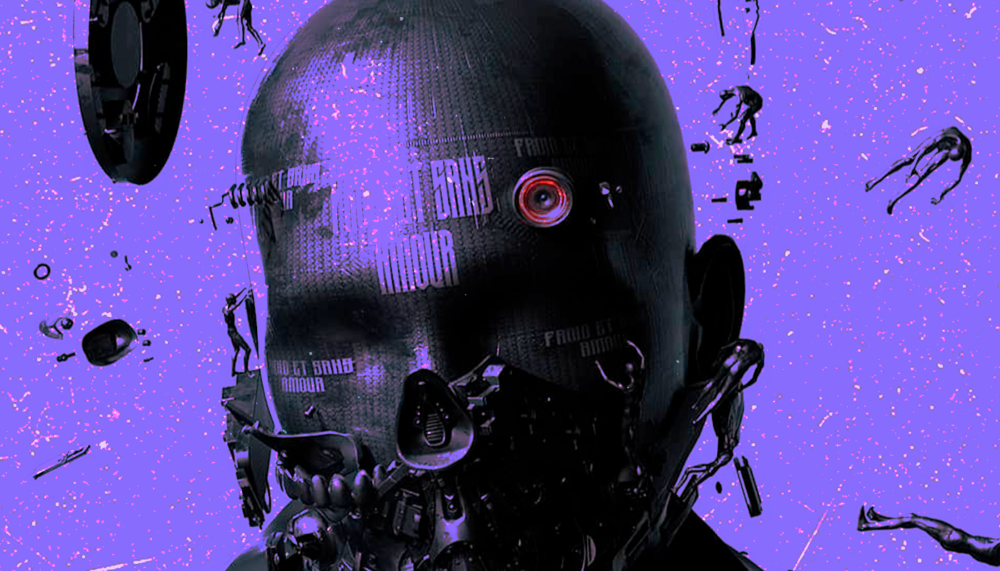

Inicio
SESGOS ALGORÍTMICOS
Los sesgos algorítmicos aparecen cuando una inteligencia artificial toma decisiones que no son neutrales ni justas. Aunque pensemos que los algoritmos son “objetivos” porque se basan en datos, la verdad es que esos datos ya vienen cargados de historia, cultura y desigualdad. Es como enseñarle a un robot a pensar... pero con los prejuicios que ya existen en el mundo.

El 85% de los algoritmos de IA pueden reproducir sesgos si no son auditados
El 85% de los algoritmos de IA pueden reproducir sesgos si no son auditados
La mayoría de los sistemas se entrenan con datos que ya vienen sesgados, por lo que es clave revisar cómo y con qué se programan

Un algoritmo puede tomar decisiones discriminatorias sin que nadie lo note.
Los sesgos pueden pasar desapercibidos porque están “escondidos” en el código. Sin transparencia ni revisión humana, lo injusto se vuelve invisible.